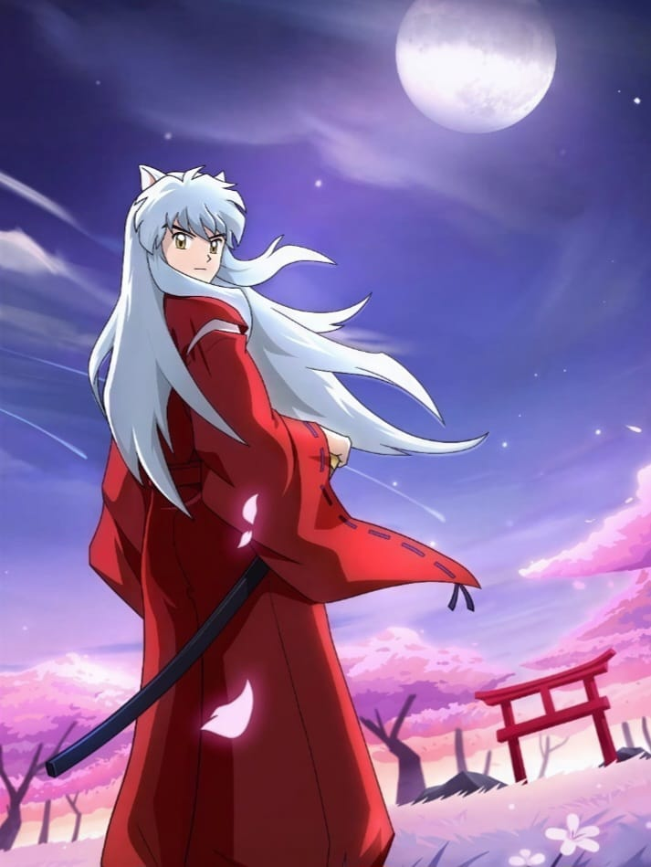

Inuyasha

Inuyasha es un hanyō, mitad demonio perro y mitad humano, y el protagonista de la serie. Es hijo del gran demonio perro Inu no Taishō y de la humana Izayoi. Lleva un haori rojo hecho con pelo de rata de fuego, tiene orejas de perro en la cabeza y usa la espada Colmillo de Acero (Tessaiga).
Es impulsivo, terco y de carácter fuerte, pero con el tiempo muestra que es leal y protector con quienes quiere. Su viaje comienza cuando busca los fragmentos de la Perla de Shikon junto a Kagome.